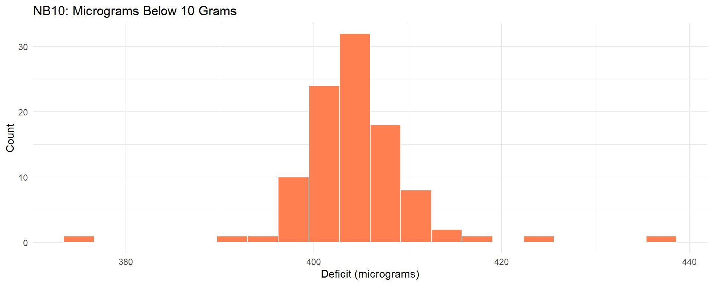

| Source | FDR Predicted % |
|---|---|
| Digest | 43 |
| Gallup re Digest | 44 |
| Gallup re election | 56 |
| election result | 62 |
Why how you collect data matters more than how much
If we have millions of records, why does sampling theory matter?
Answer: As soon as you ask “what would happen if…” you’re generalizing beyond your data.
ML Connection
Training data should be a sample from the deployment environment.
| Source | FDR Predicted % |
|---|---|
| Digest | 43 |
| Gallup re Digest | 44 |
| Gallup re election | 56 |
| election result | 62 |
The Digest’s error of 19 percentage points is the largest in polling history.
The Digest sampled from:
In 1936, these skewed wealthy—and wealthy voters favored Landon.
Selection Bias
The sampling frame excluded the population of interest.
ML Connection
If your training data excludes a subpopulation, your model won’t serve them.
Quota Sampling Fails
| source | Truman | Dewey | Thurmond | Wallace |
|---|---|---|---|---|
| Crossley | 45 | 50 | 2 | 3 |
| Gallup | 44 | 50 | 2 | 4 |
| Roper | 38 | 53 | 5 | 4 |
| election result | 50 | 45 | 3 | 2 |
All three major polls predicted Dewey by 5+ points. All three were wrong.
Quota sampling: Match sample demographics to population demographics.
The hidden bias: Interviewers chose “convenient” subjects within quotas—who tended to vote Republican.
Key insight: Too many known and unknown factors to control them all.
Solution: Let chance create a representative sample.
Simple random sampling: Every individual has a known, equal probability of selection.
Hallmark of Probability Sampling
The probability of including any given individual can be calculated in advance.
Simple random sampling is often impractical (cost, logistics).
Multi-stage cluster sampling: Randomly select regions → towns → precincts → households
Key features preserved:
| Year | Sample Size | Winner | Gallup % | Actual % | Error |
|---|---|---|---|---|---|
| 1952 | 5385 | Eisenhower | 51 | 55.1 | -4.1 |
| 1960 | 8015 | Kennedy | 51 | 49.7 | 1.3 |
| 1976 | 3439 | Carter | 48 | 50.1 | -2.1 |
| 1984 | 3456 | Reagan | 59 | 58.8 | 0.2 |
| 2000 | 3571 | Bush | 48 | 47.9 | 0.1 |
| 2004 | 2014 | Bush | 49 | 50.6 | -1.6 |
Errors mostly within ±3 percentage points—with samples of 2,000-8,000, not millions.
In the 1970s, concern arose that graduate admissions were biased against women.
Overall admission rate: Men 44%, Women 35%
But department-by-department analysis told a different story…
Most departments admitted a higher percentage of female applicants.
What happened? Women applied disproportionately to departments with lower overall admission rates.
Aggregating across departments reversed the apparent pattern.
ML Connection
A feature (gender) appeared predictive of the outcome (admission) only because both were associated with a confounder (department choice). Stratify by potential confounders.
ML Connection
Your test set is a sample; your deployment data may not be from the same distribution.
Observational data: Subjects choose their own “treatment”
Confounding: Factors that affect both treatment choice and outcome
Experiment: Researcher assigns treatment, breaking confounding
| Grade | Group | Size | Polio Rate (per 100k) |
|---|---|---|---|
| 2 | treatment | 225000 | 25 |
| 1, 3 | control | 725000 | 54 |
| 2 | no_consent | 125000 | 44 |
Problems:
| Group | Size | Polio Rate (per 100k) |
|---|---|---|
| treatment | 200000 | 28 |
| control | 200000 | 71 |
| no_consent | 350000 | 46 |
Key insight: Non-consent group had lower rate than placebo group.
Consent itself was confounded with risk!
Randomization: Consenting parents’ children assigned to vaccine or placebo by chance
Blinding: Neither parents, doctors, nor evaluators knew assignment
This eliminates:
ML Connection
In supervised ML, annotators should not have access to information that could bias their labels. The NFIP’s initial design mirrors label leakage.
| Study Design | Marked Enthusiasm | Moderate | None |
|---|---|---|---|
| no controls | 24 | 7 | 1 |
| controls not randomized | 10 | 3 | 2 |
| randomized controlled | 0 | 1 | 3 |
The same surgery looked beneficial or useless depending on study design.
| Design | Surgery Survival % | Control Survival % |
|---|---|---|
| randomized | 60 | 60 |
| not randomized | 60 | 45 |
Surgery patients: ~60% survival in both study types
Control patients: 60% (randomized) vs 45% (non-randomized)
Non-randomized studies used sicker patients as controls.
ML Connection
Evaluating a model on a non-exchangeable test set overstates performance. Randomized train/test splits guard against this bias.
ML Connection
A/B tests are randomized controlled experiments. Observational “causal” claims require strong assumptions.
NB10: A standard weight, nominally 10 grams
Study: 100 measurements under identical conditions at the National Bureau of Standards
Figure 1
Each measurement = true value + bias + chance error
NB10 is biased: It weighs ~405 μg less than 10g
ML Connection
Model error = bias + variance. EDA reveals both.
\[\text{SE of mean} = \frac{\text{SD}}{\sqrt{n}}\]
For NB10:
\[\text{SE} = \frac{6.5}{\sqrt{100}} = 0.65 \text{ micrograms}\]
Our estimate of 405 μg is probably within ~2 μg of the true value.
Key Insight
Uncertainty shrinks with \(\sqrt{n}\), not \(n\). Precision and accuracy are distinct.
Figure 2
Measurements at z ≈ ±5 would be < 1 in a million under normality.
Even careful measurement processes produce non-normal tails.
ML Connection
Don’t assume normality. Look at your data.
Study design determines what data could be collected.
EDA reveals what was actually collected.
EDA answers:
No algorithm can overcome fundamentally flawed data collection.
EDA is the diagnostic step that reveals whether data support the intended use.
The examples in this chapter—from the Literary Digest poll to the NB10 measurements—show that study design flaws are often invisible until the data are examined.
How data are collected determines what conclusions are valid
Sample size without representative sampling is worthless
Observational data cannot establish causation without strong assumptions
Randomized experiments are the gold standard for causal claims
All estimates have uncertainty—quantify it
| Concept | Definition |
|---|---|
| Selection bias | Sample systematically differs from population |
| Confounding | Third variable creates spurious association |
| Randomization | Assignment by chance mechanism |
| Double-blind | Neither subject nor evaluator knows assignment |
| Standard error | SD of a sample statistic: \(\sigma / \sqrt{n}\) |
Train/validation/test splits are sampling problems
Distribution shift: Deployment ≠ training distribution
Fairness: If subgroups are undersampled, models underperform for them
Causal inference: When can observational data support cause-and-effect claims?
Break into teams:
A TA gives a 10-question quiz. After grading:
Fill in the blanks—or do you need the raw data? Explain briefly.
In a large health survey, the percentage of left-handed respondents decreased from 10% at age 20 to 4% at age 70.
“The data show that many people change from left-handed to right-handed as they get older.”
The 25th percentile of height is 62.2 inches; the 75th is 65.8 inches. If the distribution is normal, find the 90th percentile.
What modern datasets might have Literary Digest-style selection bias?
When is a randomized experiment unethical or impractical?
How would you detect distribution shift between training and deployment?
| Section | Slides | Suggested Time |
|---|---|---|
| Opening | 1-2 | 5 min |
| Observational Studies | 3-12 | 25 min |
| Experimental Studies | 13-20 | 20 min |
| Measurement/Uncertainty | 21-24 | 15 min |
| Role of EDA | 25-26 | 5 min |
| Synthesis | 27-32 | 15 min |
Total: ~85 minutes with discussion
For shorter sessions (50 min): Cut slides 8, 12, 24; condense synthesis
For longer sessions: Expand Simpson’s Paradox with actual department data; add more discussion time
For ML-focused audience: Expand “ML Connection” callouts with code examples
For statistics-focused audience: Show the mathematical derivations from FPP
All FPP datasets are loaded from the eda4mldata package:
lit_digest — Literary Digest 1936 polltruman_dewey — 1948 election predictionsus_elections — Gallup accuracy 1952-2004salk_nfip — Salk vaccine NFIP designsalk_blind — Salk vaccine double-blind designportacaval_studies — Portacaval shunt study resultsportacaval_survival — Shunt survival ratesnb10 — NB10 weight measurements